Introduction
Welcome to the VirtualBow user manual! This guide will show you how to use the VirtualBow software to design bows, simulate their performance, and interpret the results. For support, feedback, or to download the latest version, please visit the project website: https://www.virtualbow.org/.
Please keep in mind that VirtualBow is still under active development, and many of its simulation results have not yet been systematically validated. Although users often report good agreement with real-world behavior, the results should not be taken at face value. Generally, three main factors influence how closely the simulation can match an actual bow:
-
Physical simplifications: Every simulation relies on assumptions that make complex real-world behavior mathematically manageable. VirtualBow tries to make reasonable assumptions, but no model can capture reality perfectly. If you’re interested in the underlying theory, you may want to explore the VirtualBow theory manual.
-
Software implementation: Errors in the code can obviously affect accuracy. While much work has been put into verifying the simulation code by automated testing, bugs can never be completely ruled out.
-
Quality of input data: A simulation is only as accurate as the data provided. In practice, no bow can be built exactly as modeled in VirtualBow, even though the type of bow can make this task easier or harder. Natural variations in material properties and small deviations in geometry, for example, will accumulate and affect the outcome.
Many of those points are being worked on to further improve the accuracy of VirtualBow. And while simulations will never be perfect, they can still reveal a lot about how a bow design works, highlight weaknesses, and point you toward possible improvements. Think of VirtualBow as a complementary tool to real world experimentation: it won’t replace building and testing real bows, but it can make the process more informed and efficient.
Model Editor
The model editor is the first thing you will see when opening VirtualBow. It serves as the central workspace where you create and refine your bow designs. Here you can specify shape and dimensions, adjust material properties, and configure all other parameters that affect the bow’s behaviour. Once the model is set up, you can launch simulations to evaluate the performance of your design.
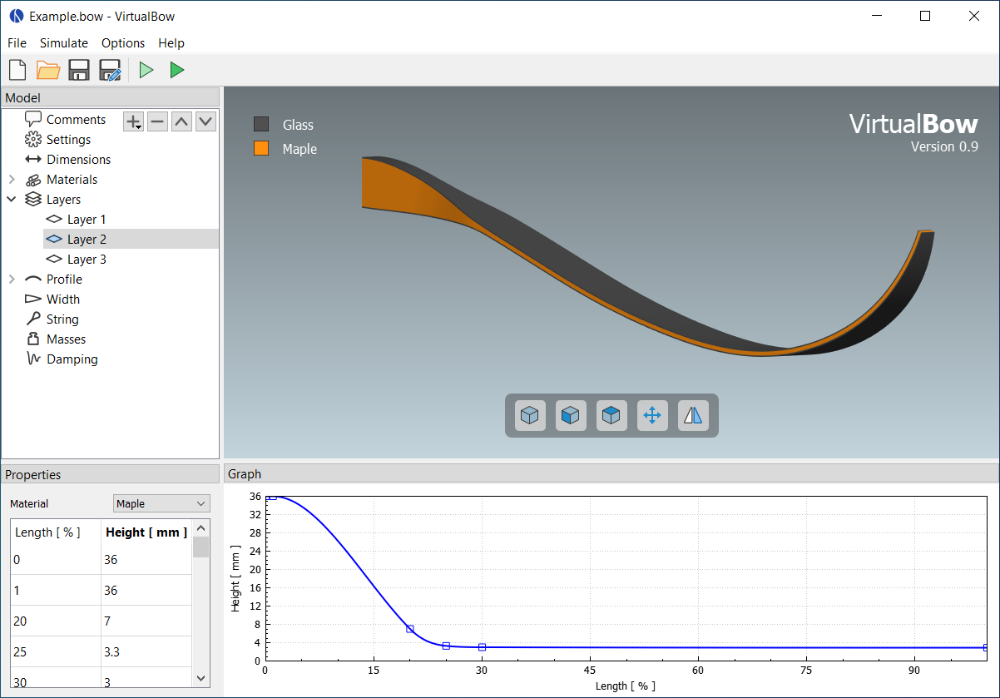
Loading and saving files
Use the file menu or the toolbar buttons at the top to create, open, and save bow models.
These models are stored on disk as .bow files, which contain all physical and geometric parameters of the design.
You can share these files with other users, who can then open them in VirtualBow to inspect or work with your models.
Note
New versions of VirtualBow often introduce internal changes to the
.bowfile format. The software aims to remain compatible with older files whenever possible, so you can still open models created with earlier releases (currently down to version0.7). When you save such a file, VirtualBow automatically converts it to the current format and creates a backup with a.bakextension in case anything goes wrong. After opening an older.bowfile, it’s a good idea to review the model to ensure that the conversion was successful.
Editing the bow model
The main area of the editor displays a 3D visualization of the bow’s current geometry. You can rotate the view with the left mouse button, pan with the middle button, and zoom using the mouse wheel. Additional view controls are available through the buttons at the bottom of the window. Alongside the 3D view, the editor interface includes three panels:
-
Model: The model tree in the top-left corner shows how the bow model is organized, grouping its various physical and geometric properties. Selecting an item in the tree displays its details in the Properties and/or Graph panels. Some categories - such as Materials, Layers, and Profile - can be edited directly in the tree by adding, removing, or renaming items.
-
Properties: The property editor displays the properties of the currently selected item in the model tree. Here you can inspect and modify the physical and geometric parameters of the bow model.
-
Graph: The graph view will show any graphs/plots that are associated with the selected item in the model tree. The graphs reflect the current properties and change as the properties are being edited.
-
Graph: The graph panel displays any plots associated with the selected item in the model tree. These graphs update automatically as you adjust the corresponding properties, providing immediate visual feedback.
Note
You can change the physical units used throughout the model editor under Options → Units.
Running Simulations
Simulations can be started from the Simuate menu or by clicking one of the toolbar buttons. Once a simulation has finished, the results open in a separate result-viewer window. There are two simulation modes:
-
Statics: The static simulation analyzes the bow as it is drawn from brace height to full draw. One of the results is the force-draw curve, among other characteristics. This mode is called static because the bow is considered to be in static equilibrium at each stage of the draw.
-
Dynamics: The dynamic simulation analyzes the bow and arrow in motion as the string is released from full draw. It provides results such as arrow speed and efficiency. Because it requires the initial state of the bow at full draw, every dynamic simulation is automatically preceded by a static simulation.
Comments
The Comments item at the top of the model tree is provided purely for documentation. It does not affect the simulation in any way. You can use this section to record notes about anything, including the bow design, its parameters, design decisions, or observations from simulations.
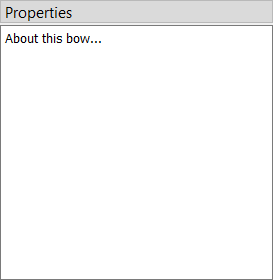
Settings
The Settings allow you to fine-tune how the simulation is carried out. In most cases, the default values provide a good balance and will work just fine, so if you are reading this manual for the first time, you may choose to skip this section and revisit it later if needed.
Because the default settings are chosen as a reliable general choice, they prioritize accuracy and stability over raw simulation speed. For certain tasks, however - such as running a large number of scripted simulations - it may be worthwile to adjust the settings for better performance. Conversely, some bow designs may occasionally fail with default settings, in which case alternative settings can help the simulation complete successfully.
The available options are divided into general settings that affect both simulation modes, as well as mode‑specific settings for the static and dynamic simulations.
General
Limb elements: Number of finite elements used to approximate the limb geometry. Increasing this value improves accuracy at the cost of longer computation times.
Limb sample points: Number of sampling points along the limb where stresses, strains and other quantities are evaluated. Higher values produce result plots with a finer resolution. The added computational cost of increasing this value is small, but beyond a certain point the increased resolution offers no practical advantage anymore.
Statics
Min. draw resolution: Defines the minimum number of steps the static simulation takes as it progresses from brace height to full draw. A higher value increases the resolution of the static results. You can usually reduce this value to speed up the simulation, especially if you are primarily interested in the dynamic results.
Max. draw resolution: Defines the maximum number of steps the static simulation takes as it progresses from brace height to full draw. This setting is currently unused, but future versions of VirtualBow might use it for adaptive step size control.
Iteration tolerance: Stopping tolerance for the static equilibrium iterations. This value is a tradeoff between accuracy and simulation time. A tolerance that is too large may produce inaccurate results, while one that is too small wastes computation on unnecessary precision. Both an overly low and an overly high tolerance can eventually lead to simulation failure.
Dynamics
Arrow clamp force: The force the arrow must overcome to separate from the string. This value is set fairly low by default. Increasing it can help resolve issues that may occur when simulating very light arrows.
String compression factor: Determines the compressive stiffness of the string as a fraction of its tensile stiffness. An idealized string carries load only in tension, not in compression. For numerical reasons, however, the compressive stiffness cannot be set to zero, which is why this small positive factor is required.
Timespan factor: This factor controls the duration of the simulated time interval. A value of 100% corresponds to the moment when the arrow passes brace height. The default value is higher to capture events that may occur after the arrow has left the bow, such as peak forces and stresses on the limbs and string.
Timeout factor: Factor controlling the timeout of the dynamic simulation. The simulation is aborted if arrow separation has not occurred by the time the simulated duration exceeds this factor multiplied by a reference time determined for the bow.
Min. timestep: Lower bound for the time step of the dynamic simulation. The solver adjusts its step size automatically, but this setting ensures that the steps stay large enough to prevent the simulation from slowing to a crawl.
Max. timestep: Upper bound for the time step of the dynamic simulation. The solver adjusts its step size automatically, but this setting ensures that the steps stay small enough to maintain sufficient detail in the results.
Steps per period: Number of steps the dynamic solver tries to take per current characteristic time period of the system. This serves as the target the solver uses when adjusting its time step. Increasing it improves accuracy and stability, at the cost of additional computation time.
Iteration tolerance: Stopping tolerance for the dynamic equilibrium iterations. This value is a tradeoff between accuracy and simulation time. A tolerance that is too large may produce inaccurate results, while one that is too small wastes computation on unnecessary precision. Both an overly low and an overly high tolerance can eventually lead to simulation failure.
Handle
This category determines how the middle section of the bow is modeled. There are two options to choose from: Flexible and Rigid. Selecting Flexible means the middle section is fully modeled and simulated as part of the limb geometry you define later. If your bow has a middle section that shouldn’t or can’t be modeled in VirtualBow, choose Rigid to specify the dimensions of a rigid section placed between the limbs.
Flexible
A flexible handle is the simplest option - no additional parameters are required. You model the handle as part of the limb geometry, and the simulation treats it just like the rest of the limb. Of course, the options for modeling intricate handle geometries in VirtualBow are limited, since this is not its primary focus.
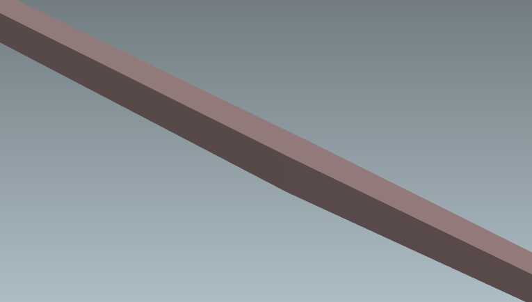
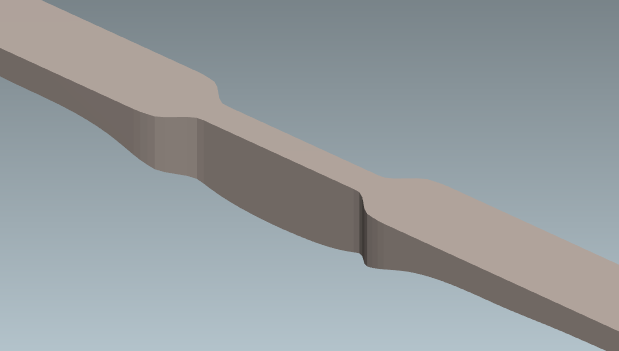
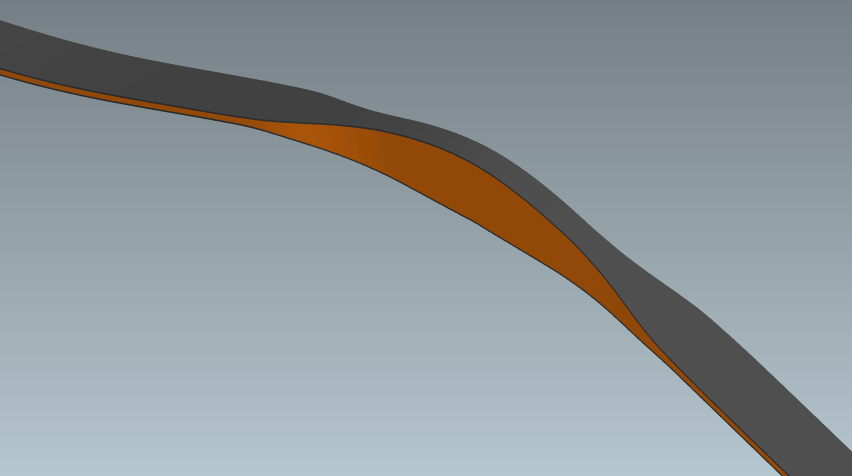
The bow’s pivot point, which is later needed for defining brace height and draw length, is automatically placed on the belly side of the bow’s center.
Rigid
Selecting Rigid allows you to specify a rigid middle section of the bow to which the limbs are attached. This configuration is typical for takedown bows with a riser, but it can also be used for other middle‑section designs that you prefer not to model explicitly in VirtualBow.
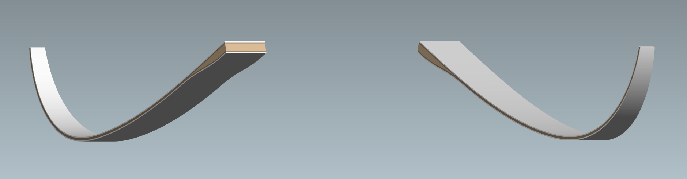
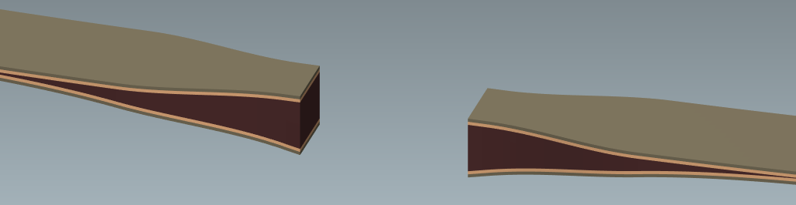
The following parameters are required for a rigid handle. They determine the spacing and orientation of the two limbs as well as the placement of the pivot point. See also the figure below for a visual definition of each parameter.
Length: Specifies the length of the rigid middle section, measured as the distance between the limb attachment points. The limbs are attached to the attachment points by their belly-side edges.
Angle: Sets the angle at which the limbs attach to the rigid middle section. Positive angles add reflex; negative angles add deflex.
Pivot: Defines the position of the pivot point relative to the limb attachment points. Positive values add reflex; negative values add deflex. The pivot point is used as the reference for measuring brace height and draw length.
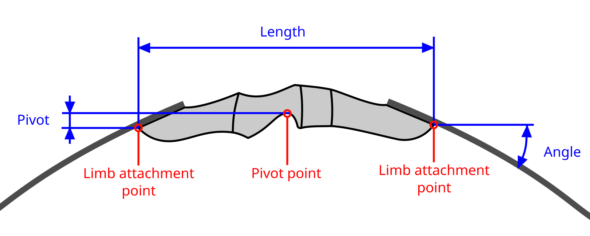
Note
When choosing the cutoff point between the limb and the rigid handle, make sure the actual limb geometry includes any fadeouts where the handle transitions into the limb.
Note
You may still choose Rigid for the additional settings even when the handle itself is modeled as part of the limb geometry. This is useful, for example, if you want to override the pivot point placement: simply define a zero‑length rigid handle and set the pivot point as needed.
Draw
Here, the brace height and draw length under which the bow operates are defined. Both values reference the bow’s pivot point, which is configured in the Handle section, so they only become meaningful once the handle has been properly set up. See also the figure below for a visual definition of each parameter.
Brace height: The brace height is measured as the distance between the bowstring and the handle’s pivot point on the braced bow. VirtualBow automatically determines the string length required to achieve the specified brace height.
Draw length: The bow’s draw length can be specified according to two conventions. Choosing between them is purely a matter of preference and convenience and has no other effects.
-
Standard: Under the Standard convention, the draw length is defined as the distance between the handle’s pivot point and the string at full draw - sometimes referred to as the true draw length.
-
AMO: The alternative is the AMO convention, defined by the Archery Manufacturers Organization, where the draw length is taken as the pivot-to-string distance plus 1.75 inches. This definition is widely used by bow manufacturers.
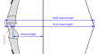
Materials
This item contains a list of all materials in the bow. The layers, which are defined later, each reference one such material and multiple layers can also share the same material. If the Materials category in the model tree is selected, the buttons (, , , ) can be used to add, remove and reorder materials. Materials can be renamed by double-clicking and entering a new name.
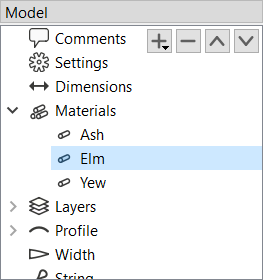
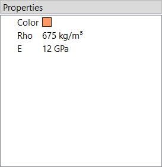
Selecting a material from the list opens its associated material properties. They are grouped into General, Elastic, and Strength properties. The elastic material properties define how the material deforms under load, while the strength properties define the material’s failure limits.
General
Color: The material can be given any color desired to make it look a bit more realistic. It doesn’t have any other effect than graphics.
Density: The density of a material is defined as its mass per unit volume and characterizes its specific weight.
Elastic
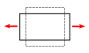
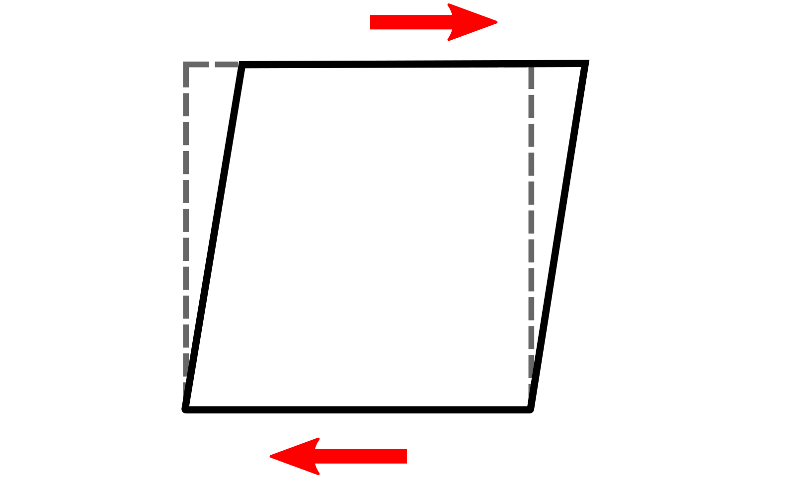
Strength
Tensile strength: The tensile strength defines the maximum normal stress a material can withstand while under tension. Beyond this limit, the material will fail or permanently deform. In VirtualBow, this value is used to assess whether any part of the limb experiences tensile stresses that exceed the material’s allowable limits.
Compressive strength: The compressive strength specifies the maximum normal stress a material can sustain while being compressed. Beyond this limit, the material will fail or permanently deform. In VirtualBow, this value is used to assess whether any part of the limb experiences compressive stresses that exceed the material’s allowable limits.
Margin of safety: The margin of safety (MoS) defines how conservatively the material’s strength limits are applied. It reduces the allowable stresses so that the bow operates with some reserve towards the actual failure thresholds. The margin of safety indicates by what percentage the allowable stress could increase before reaching the failure stress:
\[\sigma_{\rm{faiure}} = \sigma_{\rm{allowed}}\times(100\% + \rm{MoS})\]
A higher margin of safety leads to more conservative designs, reducing the risk of material failure but also potentially leaving some of the material’s performance on the table.
Note
For synthetic materials such as fiber-reinforced composites, the mechanical properties are often provided in a manufacturer’s datasheet. Natural materials like wood are more challenging, as their properties can vary quite a bit. Average numbers can be found at The Wood Database and other websites, which should provide a good baseline. As an alternative, you can determine some of the properties experimentally by a bending test. For details on that see Appendix C.
Note
In this section, several concepts from the mechanics of materials - such as stresses and strains - have been introduced without much explanation. This doesn’t mean that those topics are common knowledge, but covering them here thoroughly would be beyond the scope of this manual. If you want to dive in deeper, the list below provides some links to videos that explain these concepts in greater detail.
Layers
Layers define the makeup of the bow in the thickness direction. A bow may consist of a single continuous layer, as in traditional self bows, or it may be built from multiple layers made from different materials.
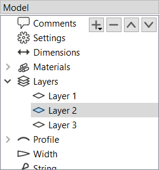
If the Layers category in the model tree is selected, the buttons (, , , ) can be used to add, remove and reorder layers. The order of layers in the list corresponds to their actual stacking order in the limb. Layers can be renamed by double-clicking and entering a new name.
Layer properties
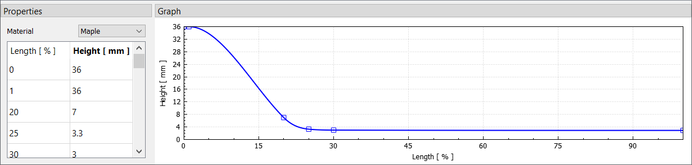
Material: Each layer references a material and has a defined thickness distribution over its length. The material can be selected from the drop-down list, which contains all materials previously added under Materials. Multiple layers may reference the same material.
Thickness: The thickness distribution is specified by a table of relative length and thickness values. Each row must contain a relative length along the limb (from 0% to 100%) and the corresponding layer thickness. Layers don’t have to span the full limb length; they may start or end within the limb to model features such as fadeouts or tip wedges. Some additional rules described below ensure that all layers together form a valid geometry. The actual thickness profile is constructed as a smooth curve (a monotone cubic spline) passing through the provided values and is displayed in the Graph panel. The plot’s context menu offers additional options, such as showing or hiding control points or adding an overlay image.
Additional rules
A few rules must be observed when defining layer thickness to ensure that the limb geometry ends up being well‑defined. VirtualBow handles these checks for you - either enforcing the rules automatically or showing an error message when something isn’t allowed - so you don’t have to keep them all in mind yourself.
Disjoint layers
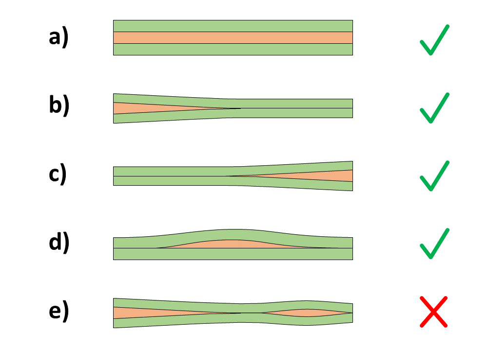
Also, even though individual layers do not need to span the entire limb, the combined thickness of all layers must be positive along the full limb length. In other words, the stack of layers must cover the entire limb without gaps.
Continuity
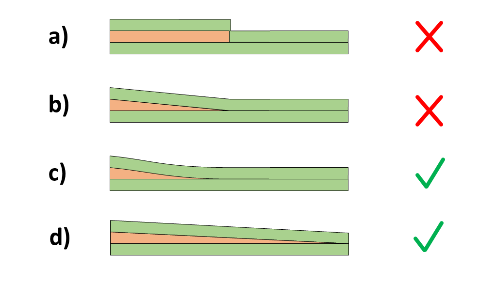
Profile
The profile defines the shape of the bow in its unbraced state. It establishes the limb’s base curvature before any string tension is applied, and therefore determines the fundamental design of the bow - such as a straight longbow form, reflex/deflex, recurve, or any other variation.
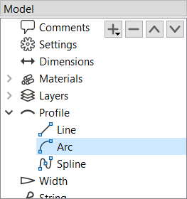
If the Profile category in the model tree is selected, the buttons (, , , ) can be used to add, remove, and reorder the segments that make up the profile curve (such as lines, arcs, and other types). The properties available for each segment depend on its type and are described below. The resulting profile shape is displayed in the Graph panel. The plot’s context menu provides additional options, such as showing or hiding control points, displaying curvature, or adding an overlay image.
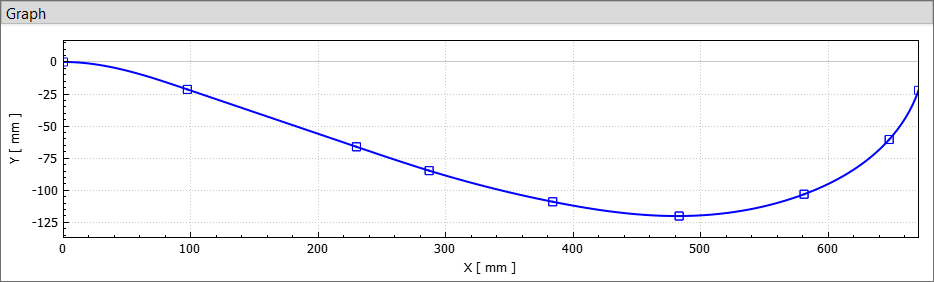
Line Segments
A line segment represents a straight section of the profile. Its only adjustable property is its length.
Arc Segments
An arc segmnent represents a circular arc defined by its length and radius. The radius may be positive or negative, which determines the direction in which the arc curves. A radius of zero will be interpreted as a straight line instead.
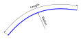
Spiral Segments
A spiral segment represents an Euler spiral, a curve whose curvature changes linearly along its length. This makes it ideal for creating smooth transitions between straight lines and arcs, or between arcs of different radii. It is defined by a start radius, an end radius, and a length. Both the start and end radius may be positive, negative, or zero, allowing the spiral’s endpoints to curve in either direction or transition seamlessly into straight sections.
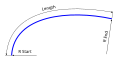
Spline Segments
A spline segment interpolates a series of (x, y) points using a cubic spline curve.
The coordinates are specified relative to the segment’s starting point (i.e. the end point of the previous segment, if present).
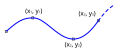
Width
The width distribution along the limb defines its side‑to‑side shape, which is shared by all layers. It is defined by a table of relative length and width values. Each row specifies a position along the limb (from 0% to 100%) and the corresponding width of the limb at that point. A smooth curve (a monotone cubic spline) is fitted through these values to create the final width distribution, which is displayed in the Graph panel. The plot’s context menu offers additional options, such as showing or hiding control points or adding an overlay image.
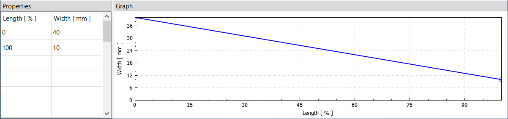
String
The string is defined by the material properties of a single strand and the number of strands it consists of. Its final length is calculated automatically based on the brace height specified in the Draw settings. The following three properties are required:
Strand density: The linear density of a single strand (mass per unit length). This determines the overall weight of the string, which is an important factor in a bow’s efficiency. Additional masses on the string - such as servings or nocking points - can be accounted for separately in the Masses settings.
Strand stiffness: The stiffness of a single strand (force per unit strain). This value determines how much the string stretches elastically under load.
Number of strands: The total number of strands in the string. The string is treated as an endless loop string in which all strands run virtually parallel, allowing their properties to be added together. Strings with an extreme amount of twist might break this assumption.
Note
The linear density of a string material can be measured easily using an accurate scale (weight divided by length). The stiffness, however, is more difficult to obtain. Manufacturers generally do not publish this value. The table below lists the results of tensile tests for three common bowstring materials, done by the German Institutes for Textile and Fiber Research in July 2018.
Material Density [kg/m] Breaking strength [N] Elongation at break [%] Stiffness [N/100%] Dacron B50 370e-6 180 8.5 2118 Fastflight Plus 176e-6 318 2.9 10966 BCY 452X 192e-6 309 2.5 12360 Table: Material properties for common string materials. The stiffness values are a linear estimation from breaking strength and elongation.
Masses
Here you can set the mass of the arrow as well as additional masses placed on the bow or the string. Only the arrow mass is required, the others are optional and may be set to zero if not needed.
Arrow: The mass of the arrow can be specified in one of three ways:
-
Mass: The absolute mass of the arrow in grams, grains or any other selected unit.
-
Mass per force: To compare bow/arrow setups of different draw weight, arrow mass is often expressed relative to the bow’s draw weight, typically in grains per pound (GPP). When you specify the arrow mass in this way, VirtualBow calculates the actual mass after the static simulation, once the bow’s draw force is known.
-
Mass per energy: The established method of defining arrow mass relative to draw force has one limitation: it does not account for the bow’s power stroke or the shape of its force-draw curve. As a result, it is not a good metric for comparing bows with different energy storage characteristics. For example, a 10 gpp arrow on a bow with a 26“ draw length is a very different setup from a 10 gpp arrow on a 30“ draw length, because both produce the same arrow mass for a given draw force, even though the longer draw stores significantly more energy and would therefore require a heavier arrow. The same problem arises when comparing, for example, a longbow and a recurve bow since they store different amounts of energy even at the same draw force and power stroke. To address these issues, VirtualBow offers an alternative definition of the arrow mass relative the bow’s stored energy, suggested to be measured in grains per Joule (GPJ). When you specify the arrow mass in this way, VirtualBow calculates the actual mass after the static simulation, once the bow’s force-draw curve and stored energy are known. A conversion table between GPP and GPJ is provided below to give you a sense of typical values.
String center: Additional masses located near the center of the string, typically the center serving and any nocking point(s). The image below shows a typical center serving with a single brass nocking point.
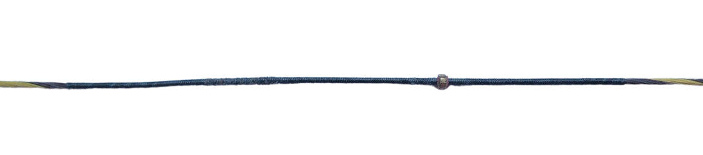
String end: Additional masses located near the ends of the string, typically the serving on the ears of an endless-loop string or the doubled-up splice section on a flemish twist string. See the image below for examples of both types.
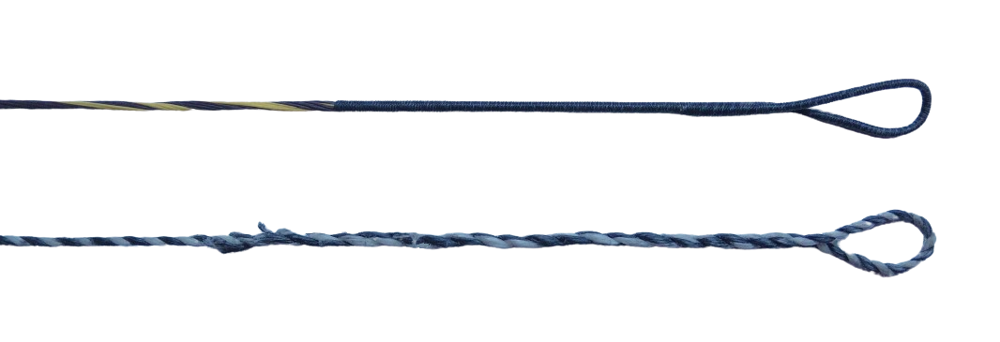
Limb tip: There exists a wide variety of different limb tip designs, a few examples are shown below. What they all share is that they add some mass to the end of the limb, which can be represented by this value. The added mass typically consists of the small portion of the limb extending beyond the string attachment point, along with any reinforcing elements such as tip overlays or similar.
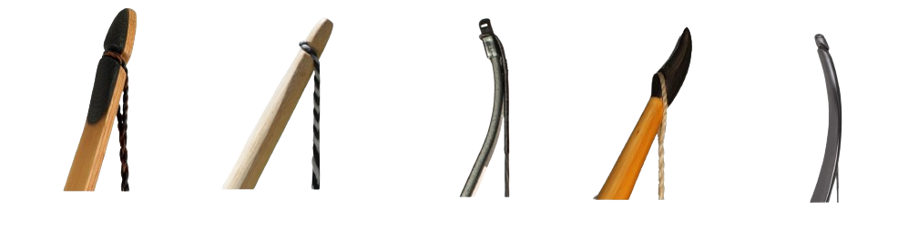
Note
This table shows the equivalent GPJ (grains per joule) value for each combination of GPP (grains per pound) and power stroke, estimated based on the assumption of a linear force–draw curve.
GPP 18“ 19“ 20“ 21“ 22“ 23“ 24“ 1 1.0 0.9 0.9 0.8 0.8 0.8 0.7 2 2.0 1.9 1.8 1.7 1.6 1.5 1.5 3 3.0 2.8 2.7 2.5 2.4 2.3 2.2 4 3.9 3.7 3.5 3.4 3.2 3.1 3.0 5 4.9 4.7 4.4 4.2 4.0 3.8 3.7 6 5.9 5.6 5.3 5.1 4.8 4.6 4.4 7 6.9 6.5 6.2 5.9 5.6 5.4 5.2 8 7.9 7.5 7.1 6.7 6.4 6.2 5.9 9 8.9 8.4 8.0 7.6 7.2 6.9 6.6 10 9.8 9.3 8.9 8.4 8.0 7.7 7.4 11 10.8 10.2 9.7 9.3 8.9 8.5 8.1 12 11.8 11.2 10.6 10.1 9.7 9.2 8.9 13 12.8 12.1 11.5 11.0 10.5 10.0 9.6 14 13.8 13.0 12.4 11.8 11.3 10.8 10.3 15 14.8 14.0 13.3 12.6 12.1 11.5 11.1
Damping
Damping accounts for energy dissipation, such as losses caused by internal friction or hysteresis in the materials. It affects only the dynamic analysis.
A typical bow loses only a small part of its efficiency to energy dissipation. Most of the loss comes from kinetic energy that remains in the bow after the arrow leaves the string. For this reason, the damping parameters are not critical for modelling overall bow performance. They do however make the behaviour of the bow after the shot more realistic, since without damping the bow’s motion would never decay.
Because modelling every form of energy dissipation in a bow in an exact way would be way too complex, the damping is reduced to two empirical values: The damping ratio of the Limbs and the damping ratio of the String. The damping ratio describes how quickly oscillations decay over time:
-
A damping ratio of 0% represents an undamped system: no energy is lost, and the oscillation just keeps going with a constant amplitude.
-
As the damping ratio increases, the oscillation decays more quickly, losing energy with each cycle.
-
At 100%, the system is critically damped: oscillations no longer occur and the system returns to equilibrium without overshoot.
See the table below for a visualization of these three cases. The damping ratios of a bow’s limbs and string are largely empirical, and there is still limited practical experience with them. Realistic values are probably in the range of 1 - 10% though. You can observe the damping behaviour of your bow’s limb by clamping the handle firmly on a table or workbench and plucking the limb tip. The longer it continues to oscillate, the lower the damping ratio.
| Damping ratio | Oscillation |
|---|---|
| 0% | 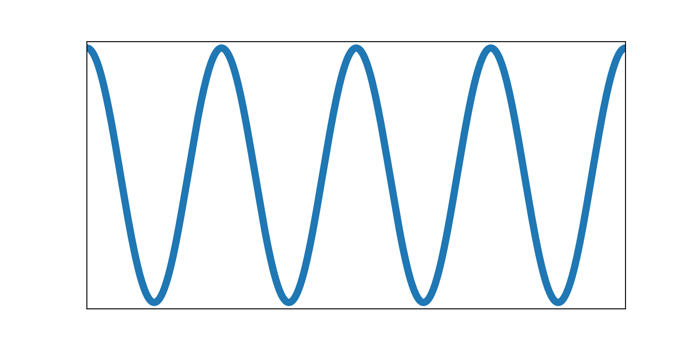 |
| 10% | 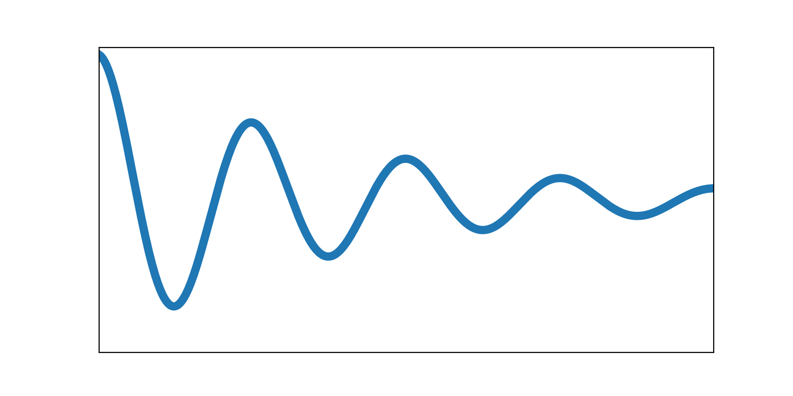 |
| 100% | 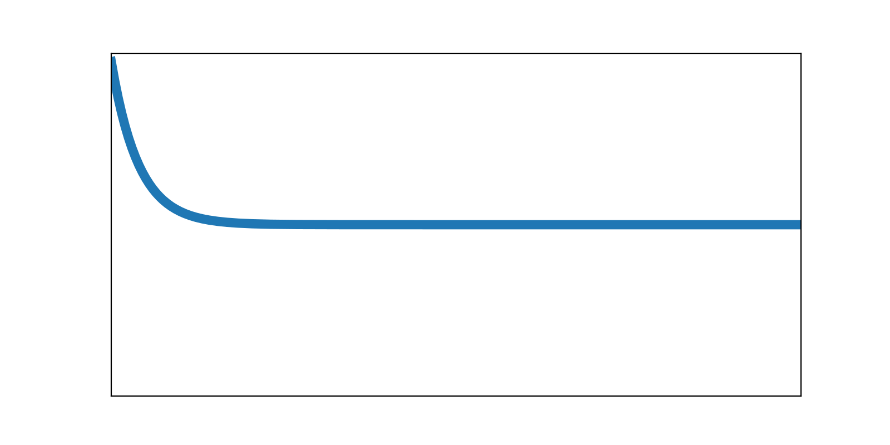 |
Result Viewer
The result viewer opens automatically after a simulation and provides tools to explore the static and dynamic behaviour of the bow. The buttons on the lower-right corner let you switch between static and dynamic results, if available. All results are organized into tabs, which are described in the following sections.
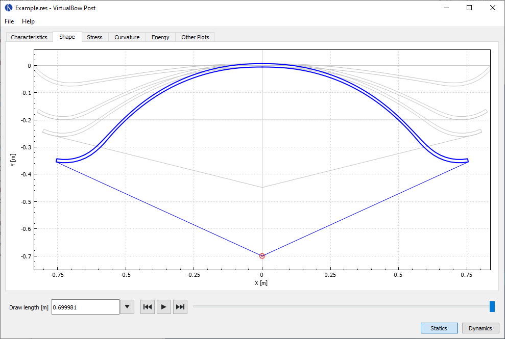
Beneath the tabs is a slider that controls the current state of the bow being displayed.
-
In static mode, the slider represents draw length
-
In dynamic mode, it represents time
This setting applies across all tabs, though only some of them make use of it. You can drag the slider to inspect a specific bow state or use the playback controls to animate the simulation continuously. The input field and dropdown menu next to the slider allow you to jump directly to key points in the results.
Characteristics
This tab lists all results that can be expressed as single numerical values. Some of these values apply only to static or only to dynamic analysis, while others are shared between both modes.
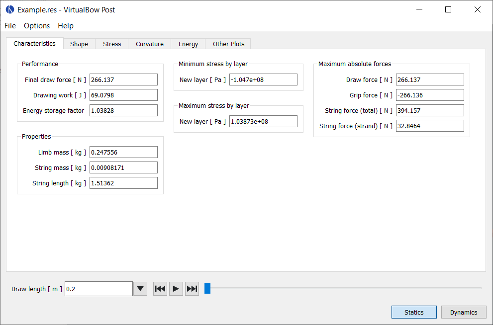
Common
Maximum stresses: Shows the maximum tensile and compressive stress that occurred in each layer during the simulation. The fields are color‑coded to indicate how these stresses compare to the material limits and the defined safety margin:
-
Green indicates that the maximum stress is within the allowed range, based on the material’s tensile and compressive strength and the chosen margin of safety.
-
Orange means the stress exceeds the safe range defined by the margin of safety, but is still below the material’s ultimate strength.
-
Red signals that the stress has surpassed even the ultimate strength of the material.
Maximum strains: Shows the maximum tensile and compressive strains that occurred in each layer during the simulation, using the same color‑coding scheme as the maximum stresses. Because stress and strain are directly linked, the maximum strains do not introduce any new information about potential material failure.
Maximum absolute forces: This section reports the highest values reached during the simulation for selected forces in the bow.
-
Draw force: Only shown in static analysis. The maximum draw force reached during the draw cycle (which may be different from the final force at full draw).
-
Grip force: The maximum push or pull force required to keep the bow’s handle stationary during the simulation.
-
String force: The maximum tensile force acting on the bowstring, shown as the total force or resolved by strand.
Statics
Final draw force: The force required to hold the bow at full draw. This value is commonly referred to as the bow’s draw weight.
Drawing work: The total mechanical energy put into the bow while drawing it. This energy is stored in the limbs as elastic potential energy and later only partly passed on to the arrow, depending on the bow’s efficiency. It corresponds to the area under the bow’s force–draw curve.
Energy storage factor: This value indicates how effective the bow’s force-draw curve is at storing energy. It is defined as the ratio between the actual energy stored in the bow and the energy that would be stored if the draw curve were perfectly linear. A more convex curve has a higher storage factor because it accumulates more energy for the same final draw force.
- Factor < 100%: The bow stores less energy than a linear draw curve would allow. This is generally undesireable and might indicate stacking towards the end of the draw.
- Factor = 100%: The bow stores exactly as much energy as a linear draw curve would. Values in this range are common for longbows and similar designs.
- Factor > 100%: The bow stores more energy than a linear draw curve would. This gives it additional stored energy at the same final draw weight, potentially improving its performance. Well-designed recurve bows, for example, should be firmly in this category.
Limb mass: The total mass of a single bow limb, calculated from its geometry and material properties. Any additional masses at the limb tips are included in this value.
String mass: The total mass of the bowstring, calculated from its length and material properties. Any additional masses are included in this value.
String length: The length of the string as determined by the simulation in order to achieve the specified brace height.
Power stroke: The power stroke is the distance from brace height to full draw. It represents the portion of the draw over which the bow accelerates the arrow.
Dynamics
Arrow mass: This is either the explicitly specified mass of the arrow, or the computed arrow mass according to the desired mass per force or mass per energy ratio.
Final arrow velocity: Final velocity of the arrow when it leaves the bow.
Final arrow energy: Final kinetic energy of the arrow when it leaves the bow.
Degree of efficiency: Describes how effectively the bow converts input energy into useful output. It is the ratio between the drawing work put into the bow and the final kinetic energy of the arrow. Higher efficiency indicates that a greater portion of the stored energy is delivered to the arrow rather than lost to other effects.
Efficiency losses: The degree of efficiency indicates what portion of the bow’s input energy is transferred to the arrow. This section shows how the remainder of that energy is distributed at the time the arrow leaves the string. For each component, both the absolute energy loss and its contribution to reducing overall efficiency are listed. The categories are kinetic and elastic energy remaining in the limb and string after the arrow left the string, as well as energy lost to damping up to that moment.
Note
The elastic energy of the limb often appears as a negative value. This does not mean the limb adds energy to the system. The reference point for the limb’s elastic energy, at least for this calculation, is its equilibrium state at brace height. At the moment the arrow leaves the string, the limb is abruptly slowed by the tension in the string. Because the string is elastic, it allows the limb to overshoot its braced position slightly, reducing its elastic energy below the reference level and producing a negative value. The string’s elastic energy increases correspondingly and no physical laws are harmed in the process.
Shape
The shape view displays the geometry of the limbs and string, along with the arrow’s position, at different stages of the draw (for statics) or throughout the show (for dynamics). The small red circle marks the nock end of the arrow, and the blue cross marks the bow’s pivot point. You can use the slider at the bottom to move through the states or play them as a continuous animation.
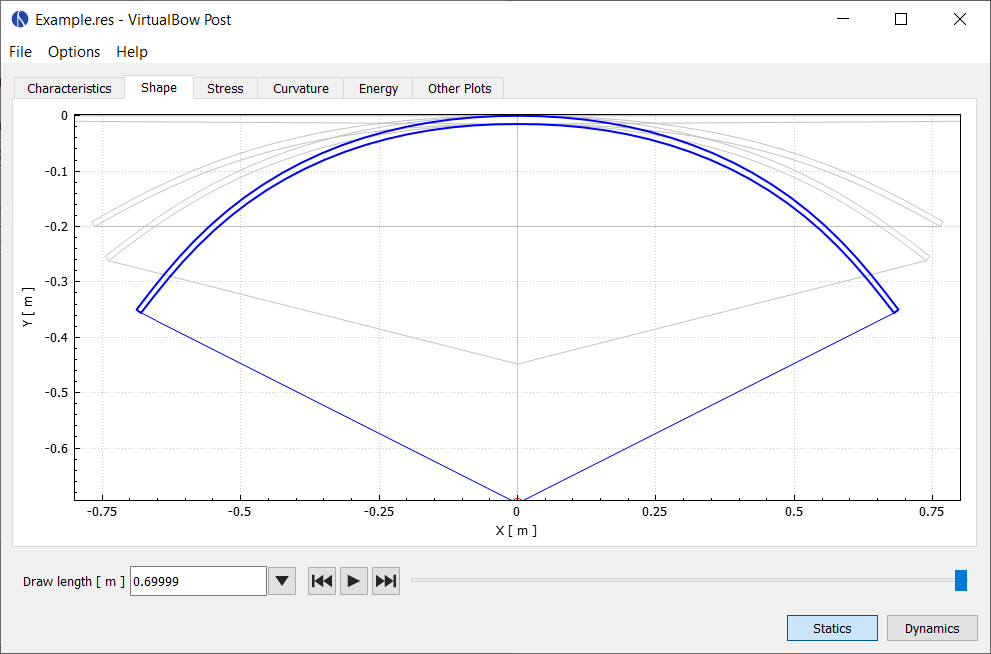
Draw
This tab is available only for static simulations. It displays the bow’s force–draw curve, showing how draw force changes with draw length.
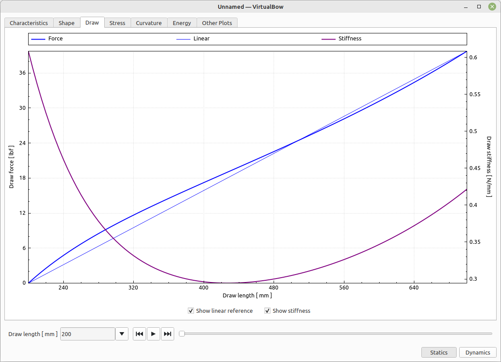
Two options for this plot are available:
Show linear reference: Adds a straight line as a reference for comparison. See also the energy storage factor in the Characteristics tab.
Show stiffness: Adds a plot of the bow’s stiffness over the draw length. Stiffness in this case is the increase in draw force per increase in draw length, or in other words the slope of the force-draw curve. High stiffness towards the end of the draw can indicate stacking.
Arrow
This tab is available only for dynamic simulations. It visualizes the motion of the arrow throughout the shot by plotting its position, velocity and acceleration over time. Together, these three curves show how the bow transfers energy into the arrow and how the arrow’s motion develops from release to separation.
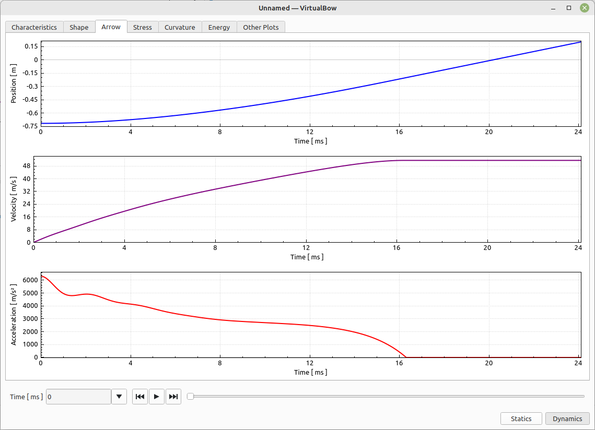
Position: Shows how far the arrow has traveled from its starting point at each moment.
Velocity: Shows how quickly the arrow is moving at each moment. The arrow’s velocity typically rises until the arrow leaves the string, then remains constant.
Acceleration: Shows how strongly the bow is accelerating the arrow at each moment. Typically decreases to zero at the time the arrow separates from the string. A slight negative acceleration (deceleration) right before separation can occur due to the arrow clamp force defined in the Settings.
Stress
This tab shows the distribution of bending stress for each layer along the length of the limb. It helps identify regions of the limb that are overstressed and ones that are carrying less load than they could.
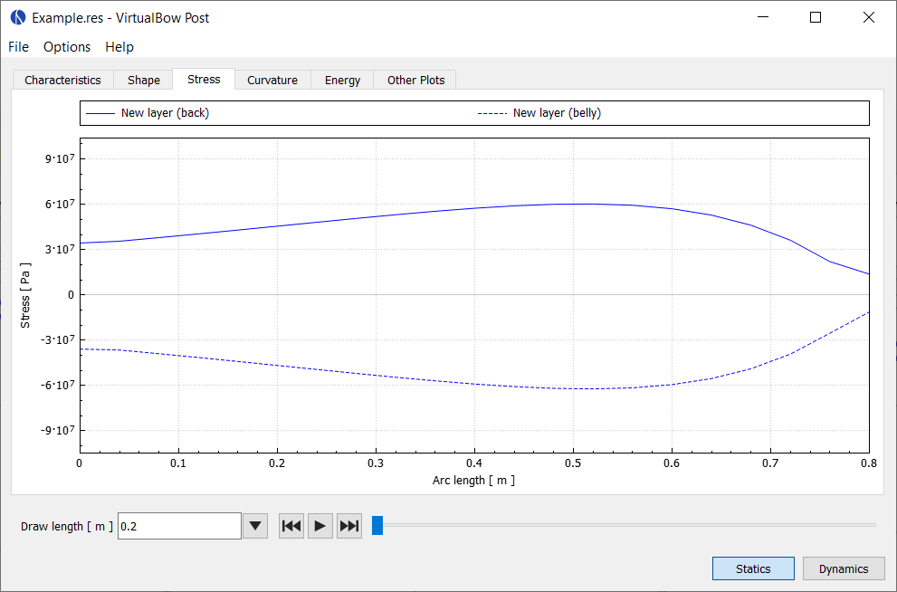
The bending stresses (tension and/or compression) vary linearly across the thickness of each layer. Due to this, the extremes always occur at the layer boundaries. The plot therefore shows two stresses per layer: one at the back side and one at the belly side. Positive values represent tension, and negative values represent compression.
Curvature
This tab shows the limb’s curvature along its length, measured relative to its initial unbraced shape. It offers an additional way to assess the bow’s tiller by highlighting which sections of the limb are bending more and which are bending less.
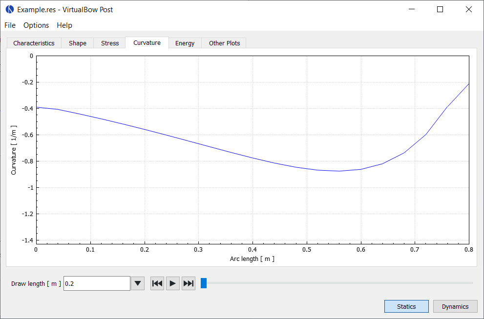
Energy
This plot shows how the energy stored in the bow evolves during the simulation and how it is distributed between components (limbs, string, arrow) and energy types (elastic/potential, kinetic, damping losses). For static simulations, it displays how the elastic energy in the limbs and string builds up during the draw. No kinetic energies or damping losses are shown, because they are zero in a static analysis. For dynamic simulations, it shows how the initial elastic energy in the limbs is transferred to the arrow and other bow components, as well as how much unused energy remains in the bow after the arrow departs.
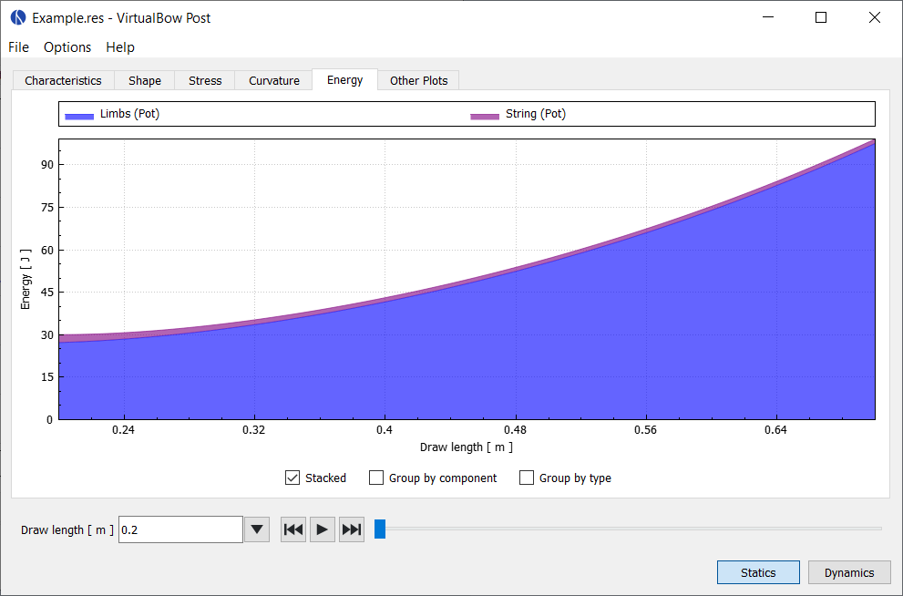
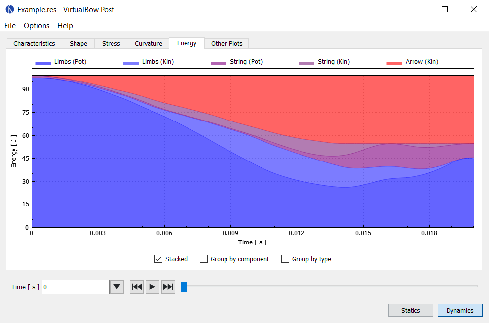
In both modes, three display options can be selected independently:
-
Stacked: Stacks all energy curves to show how they add up. If the simulation was correct, their sum should be constant.
-
Group by component: Group energies by component (limbs, string, arrow, damping)
-
Group by type: Group the energies only by type (elastic, kinetic, damping)
The reference for all elastic energies shown is the initial, unbraced state of the bow. This means the energy required to brace the bow is included.
Other Plots
This tab lets you combine any results from the simulation and plot them against one another. It allows you to explore the data freely and visualize relationships that aren’t covered by the default plots. The available data series for static and dynamic analyses are listed below.
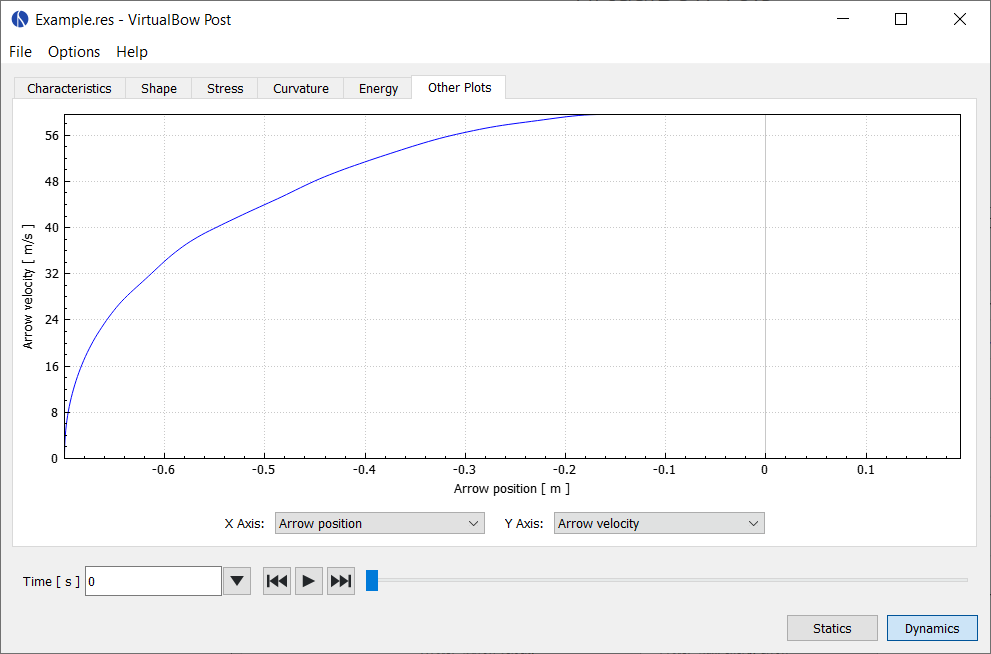
Static analysis
| Data Series | Description |
|---|---|
| Power stroke | Current distance between brace height and string |
| Draw length | Current draw length of the bow |
| Draw force | Current draw force of the bow |
| Draw stiffness | Stiffness of the draw, i.e. force increase per increase in draw length |
| String force (total) | Total tensile force in the string |
| String force (strand) | Tensile force per individual strand |
| String length | Current length of the string, including elastic stretch |
| String tip angle | Angle between the limb tip and the string |
| String center angle | Angle at the center of the string |
| Grip force | Force required to hold the grip |
| Elastic energy limbs | Elastic energy of the limbs |
| Elastic energy string | Elastic energy of the string |
Dynamic analysis
| Data Series | Description |
|---|---|
| Time | Time elapsed since release |
| Arrow position | Position of the arrow |
| Arrow velocity | Velocity of the arrow |
| Arrow acceleration | Acceleration of the arrow |
| String force (total) | Total tensile force in the string |
| String force (strand) | Tensile force per individual strand |
| String length | Current length of the string, including elastic stretch |
| String tip angle | Angle between the limb tip and the string |
| String center angle | Angle at the center of the string |
| Grip force | Force required to hold the grip |
| Elastic energy limbs | Elastic energy of the limbs |
| Kinetic energy limbs | Kinetic energy of the limbs |
| Elastic energy string | Elastic energy of the string |
| Kinetic energy string | Kinetic energy of the string |
| Kinetic energy arrow | Kinetic energy of the arrow |
Solver
The solver is the component of VirtualBow that performs all the numerical calculations required for a simulation. It is normally invoked automatically by the model editor whenever you start a static or dynamic analysis. For advanced workflows, however, the solver can also be run independently, allowing you to batch‑process models or integrate VirtualBow with external scripts.
Command Line
The VirtualBow executables are named
virtualbow-gui // Model editor
virtualbow-cli // Solver
The solver executable takes a .bow model file as its input, performs the simulation and saves the results as a .res file.
The type of simulation (static or dynamic) as well as other options are set by the command line arguments.
The detailed usage as shown by the --help option is:
Usage: virtualbow_cli [OPTIONS] <MODE> <INPUT> <OUTPUT>
Arguments:
<MODE> Mode of simulation [possible values: static, dynamic]
<INPUT> Input model file (*.bow)
<OUTPUT> Output result file (*.res)
Options:
-p, --progress Print simulation progress
-v, --version Print version
-h, --help Print help
Note
To use the command line interface on Windows you have to either specify the complete path to the respective executable or add the installation directory to your
PATHenvironment variable. There is an option to do this automatically during installation of VirtualBow.
Note
On MacOS, the VirtualBow executables are hidden inside the application bundle. They can be accessed by their full path though, or their location can be temporarily added to the
PATHenvironment variable with the commandexport PATH = $PATH:/Applications/VirtualBow.app/Contents/MacOS. Put this line into your.bash_profileif you want it to be permanently added.
File Formats
Model files
The solver reads .bow model files as created by the VirtualBow model editor.
These files use the text-based JSON format.
JSON (JavaScript Object Notation) is a widely used standard for hierarchical data composed of objects, arrays, strings, numbers, and more.
Because it is human-readable, .bow files can be easily inspected or modified with any text editor.
Result files
The solver produces .res result files containing all static and/or dynamic simulation results.
These files use the binary MessagePack format.
MessagePack represents the same kinds of data as JSON but in a more compact binary form.
Unlike the input files, .res files cannot be viewed directly in a text editor, but Visual Studio Code, for example, with a Plugins such as PackLens or Data File Viewer can be used instead.
Note
Earlier versions of this manual included detailed specifications of the internal structure of both input and output files. As the contents of these files have grown and evolved, maintaining those specifications has become impractical. Fortunately, their content is not too complicated. Most of it can be understood by experimenting and examining the resulting files. The field names often correspond to the names used in the VirtualBow GUI. If you have questions about the file formats or need guidance for advanced use cases, feel free to get in touch.
Warning
The internal file structure used by VirtualBow changes frequently. VirtualBow maintains backward compatibility only for
.bowmodel files, not for.resresult files. If you integrate tools or workflows with these formats, you should expect having to update them to keep them working with newer versions of VirtualBow.
Scripting
The primary reason to use the solver as a standalone application is to automate simulations and analyze the results programmatically. This is especially useful for tasks such as design optimization, parameter sweeps, or studying how specific model parameters influence the simulation outcome.
Scripts that interact with VirtualBow must be able to launch the solver through its command‑line interface and read or write the model and result files that serve as its input and output. Because the solver uses JSON for input and MessagePack for output, any programming language with support for these formats can be used. Both are widely supported, either natively or through readily available libraries.
To help you get started, the following sections demonstrate how to interface with VirtualBow in several programming languages commonly used in scientific computing. Each example performs the same sequence of basic tasks:
-
Load, modify, and save a model file
-
Run a static simulation using that model
-
Load the result file and print the final draw force
Python
The python example below uses the external msgpack package for reading the result files.
It can be installed with pip install msgpack.
import json, msgpack # Loading and saving model and result files
import numpy as np # Evaluating stresses
import subprocess # Runnig the simulation
# Load model file
with open("input.bow", "r") as file:
input = json.load(file)
# Modify model data
input["string"]["n_strands"] += 1
# Save model file
with open("input.bow", "w") as file:
json.dump(input, file, indent=2)
# Run a static simulation
subprocess.call(["virtualbow-cli", "static", "input.bow", "output.res"])
# Load the result file
with open("output.res", "rb") as file:
output = msgpack.unpack(file, raw=False)
# Evaluate final draw force
print(output["statics"]["final_draw_force"])
Matlab
The Matlab example uses the JSONLab library, which can read and write both JSON and MessagePack files.
% Load model file
input = loadjson('input.bow');
% Modify model data
input.string.n_strands = input.string.n_strands + 1;
% Save model file
savejson('', input, 'input.bow');
% Run a static simulation
system('virtualbow-cli static input.bow output.res');
% Load the result file
output = loadmsgpack('output.res');
% Evaluate final draw force
disp(output.statics.final_draw_force);
Julia
For the Julia example, two external packages are used: JSON for loading model files and MsgPack for loading result files.
They can be installed with julia> import Pkg; Pkg.add("JSON"); Pkg.add("MsgPack").
using JSON # Loading and saving model files
using MsgPack # Loading result files
# Load model file
stream = open("input.bow", "r")
input = JSON.parse(stream)
close(stream)
# Modify model data
input["string"]["n_strands"] += 1
# Save model file
stream = open("input.bow", "w")
JSON.print(stream, input, 2)
close(stream)
# Run a static simulation
run(`virtualbow-cli static input.bow output.res`)
# Load the result file
stream = open("output.res", "r")
output = unpack(stream)
close(stream)
# Evaluate final draw force
println(output["statics"]["final_draw_force"])
Appendix
Tips & Tricks
This section collects various notes about useful VirtualBow features that didn’t quite fit into any other part of the manual.
Units
Manually converting between units is tedious and error-prone. That’s why all inputs and outputs in VirtualBow have a configurable unit that can be changed under Options - Units.
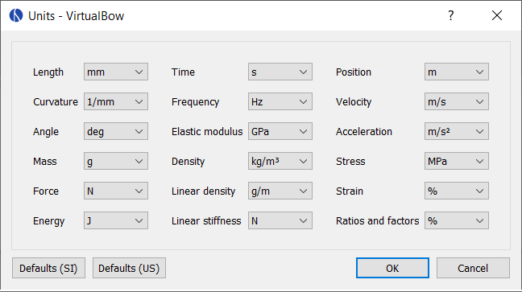
In this dialog you can select units for different categories of values. Changing the unit for Length, for example, will change the unit everywhere where lengths are shown (e.g. width, layer height, dimensions). There are also two pre-defined sets of defaults, one for SI units and one for US units. You can use those by clicking either of the buttons on the bottom left.
It is worth noting that the units only affect how values are shown in the user interface. The data in the model and result files is always stored in SI base units.
Plots
Background images
Any plot can be given a background image. After selecting Background image… in the plot’s context menu, you can load an image and adjust its position and orientation.
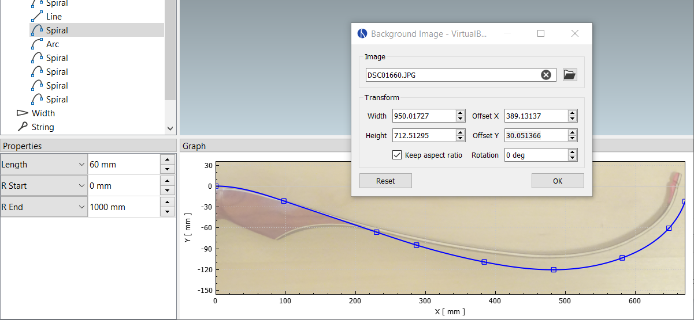
This feature can be used to model existing bows more easily or to compare the simulation results with actual photographs. Background images are only temporary, they are not saved with the model files.
File exports
Plots can be exported to various image and data formats using the menu entry Export as…. Supported export formats are:
-
PDF vector graphic
-
PNG image
-
BMP image
-
CSV table
Other options
Some of the plots have additional context menu entries. The profile plot, for example, has options to show or hide nodes or visualize the curvature.
Number inputs
Number input fields may seem simple, but there are a few details worth knowing to use them more effectively.
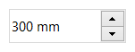
Arithmetic expressions
Most number input fields in VirtualBow accept arithmetic expressions.
This means that you can enter expressions like 1 + 5/2, press enter, and it will automatically be evaluated to 3.5.
Supported operations are +, -, *, /, ^ and grouping with ( and ).
Decimal separator
VirtualBow uses a dot (.) as the decimal separator for numbers, regardless of local conventions.
However, since some countries use a comma (,) instead, their keyboard layouts have a comma on the number block, making it cumbersome to enter numbers with a dot.
Therefore, to make things easier for such users, the comma on the number pad is automatically converted to a dot.
Scrolling
The little arrow buttons on the right of the input field can be used to increment/decrement the value. Scrolling the mouse wheel while the field is selected does the same thing, just faster. This can be used to quickly move through a whole range of values, which is especially useful when editing the bow’s geometry and observing the changes in the plots and the 3d view.
Tables
Content in tables can be copied, cut, pasted and deleted using either the context menu or the standard shortcuts. Copy and paste also works between VirtualBow and other applications, for example spreadsheet software like Excel or LibreOffice Calc.
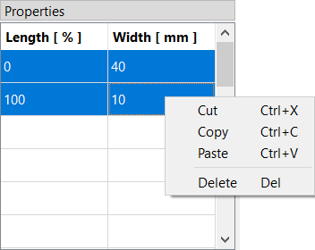
Bending Test
A bending test is a good way to experimentally determine the elastic modulus \(E\) of a material. Starting point is a material sample with a constant width \(w\) and height \(h\). It is important that the dimensions, especially the height, are fairly precise, since they have a large influence on the final result.
The useful length \(l\) of the sample should be much larger than the cross section dimensions such that it can bend enough for easy measuring while still staying in the elastic range of the material. On the other hand, the sample shouldn’t be so long that it bends significantly under its own weight either. A suggestion would be \(l \ge 100 \cdot h\).
To perform the test, the sample is either clamped on one end, as shown in Clamped Setup, or placed between two supports as shown in Three-point Setup. It is then subjected to a force \(F\) and the resulting deflection \(s\) is measured. Finally the elastic modulus can be calulated from the measured deflection depending on the chosen setup.
A good way to apply an accurate force is to use a known weight \(m\), suspended for example on a thread, and calculate the force as \(F = m \cdot g\) with \(g=9.81\frac{m}{s^2}\). Alternatively, an accurate bow/hanging scale might also work.
Clamped Setup
In this setup the sample is clamped on one end and the force is applied on the free end. The elastic modulus can be calculated as
\[E = \frac{Fl^3}{3Is} = \frac{4Fl^3}{wh^3 s}\]
Three-point Setup
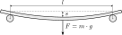
In this setup the sample is placed between two rolling supports with distance \(l\) and the force is applied in the middle. The elastic modulus can be calculated as
\[E = \frac{Fl^3}{48Is} = \frac{Fl^3}{4wh^3 s}\]